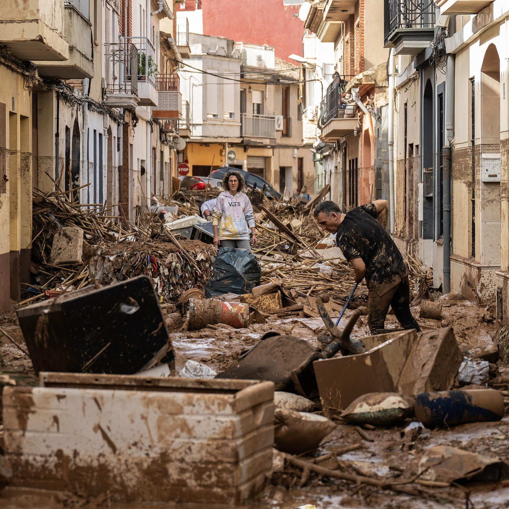

La Introducción
El 29 de octubre de 2024, en pocos minutos, las inundaciones causadas por intensos aguaceros destruyeron todo a su paso. La gente de Valencia no tenía ningún tiempo para reaccionar. Los ciudadanos de Valencia y del este de España quedaron atrapados en sus coches y casas. Después de cuatro días, más de 210 personas murieron. La ciudad estaba cubierta de barro y basura, con cortes de electricidad y escasez de productos básicos. Las autoridades enviaron alertas antes de que fuera demasiado tarde. Las inundaciones fueron causadas por fuertes lluvias en las cuencas de los ríos Magro y Turia. Científicos creen que el cambio climático contribuyó, especialmente por la temperatura inusualmente alta del mar Mediterráneo y las sequías anteriores. El gobierno valenciano clasificó la crisis como nivel dos y pidió apoyo al gobierno central. El primer ministro Pedro Sánchez envió 5,000 soldados y 5,000 policías nacionales para ayudar con rescates y limpieza. Voluntarios también ayudaron, mientras las autoridades enfrentaron críticas por la demora en las alertas móviles. La fuente principal es un artículo de un periódico digital de Los Angeles Times. Es un medio confiable y reconocido que informa sobre eventos internacionales en español. En realidad, no sé por qué elegí este tema. Espero que me vaya bien en el proyecto, pase lo que pase. Tomé las clases de ciencia ambiental en mi primer año de universidad. El cambio climático es también un problema serio en los Estados Unidos. Las temperaturas en aumento, las sequías y un incremento en los desastres naturales en general ocurren en muchos lugares de los Estados Unidos como los incendios forestales en Los Ángeles.